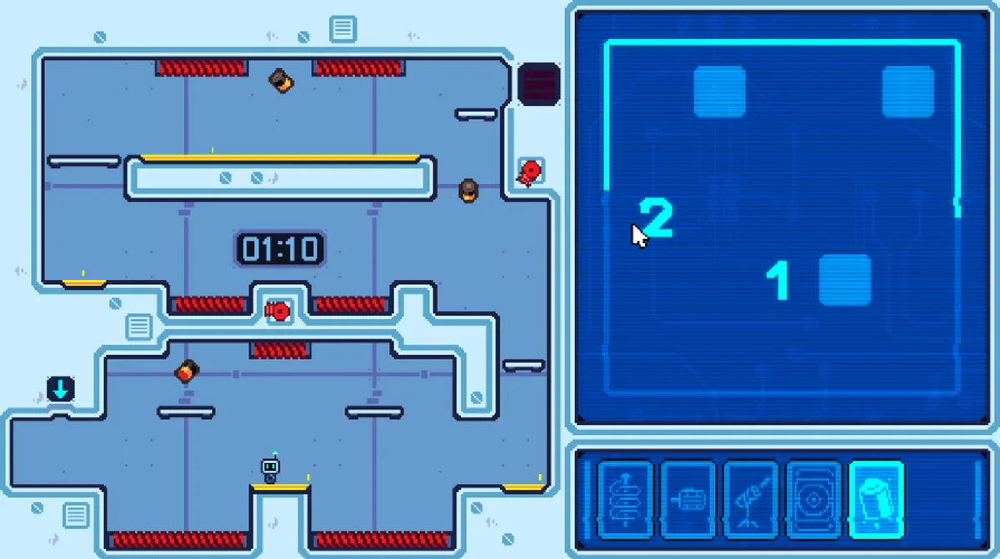

ggLab · A-1455
A game that connects two perspectives
Factory Reset explores asymmetric multiplayer: two players, two perspectives and a need to communicate. Try student games and the interactive play wall in the Graphics and Game Design Laboratory.
Multiplayer games
- Factory Reset ↗ — asymmetric multiplayer
- Spory ↗ — local two-player competition
- Shroombellion: Mushrooms against humanity ↗ — two-player split-screen
- Spirate ↗ — two-player co-op, locally or via Steam
- Harmonopolis ↗ — physical game with a multiplayer mode